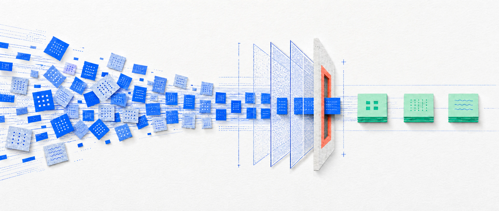
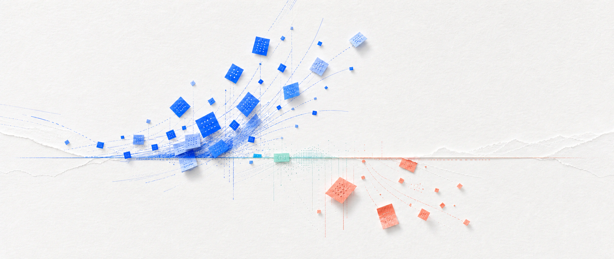

issues resolved per hour
The least experienced agents improved by 34%, suggesting the assistant helped most where patterns were learnable and answers were easy to check.
AI has made writing software faster. Shipping it safely to production hasn’t gotten easier. That space — between code that’s written and a system that’s live, reliable, and trusted — is where most enterprise AI value is won or lost. We call it the production gap.
Adoption is no longer the question. Tools are everywhere; agents are entering the conversation. And yet the value keeps failing to arrive at the enterprise level. Most teams measure AI by how fast a person produces a draft, a code change, or an analysis. That’s a useful local signal — but it isn’t enterprise speed. Enterprise speed is the time from need to a change that is approved, deployed, adopted, and producing value. Across every serious study of the last three years, the research points to one consistent pattern.
AI accelerates bounded, pattern-shaped work. Drafting, summarizing, test scaffolding, routine implementation.
It does not uniformly accelerate complex delivery. Mature systems still run on context, judgment, integration, review.
The bottleneck moves downstream. When creation gets cheaper, review, validation, and rework become the constraint.
Self-reported speed is inflated. People feel faster than the delivery data supports.
The winners redesign the workflow, not just the tooling. Value shows up when review, decisions, and release are rebuilt around the new speed.
Enterprise AI has passed the awareness phase. McKinsey reports that 88% of organizations use AI in at least one function, yet BCG finds only 5% consistently generating substantial value. Adoption is not transformation.
use AI in at least one function
Up from 78% a year earlierconsistently generate substantial value
BCG’s “future-built” companiesexperiment with agents: 23% scaling in at least one function and 39% experimenting.
have begun scaling AI enterprise-wide; 39% report any EBIT impact, mostly below 5%.
qualify as “AI high performers” seeing significant value.
are scaling and seeing returns / report minimal revenue and cost gains.
Enterprise speed isn’t set by the fastest step. It’s set by the slowest constraint on the path to production. AI compresses one step — the draft or the build. It does not automatically compress the rest of the path.
more output reaches the same review gate
New work arrives faster than the organization can check and release it.
Creation expands immediately. Review and release capacity do not—so more output becomes more work waiting.

If AI cuts drafting time by 70% but review time doubles, delivery barely moves. Measure the whole path—including review, rework, coordination, governance, and adoption—then find the new constraint before it becomes a quality, cost, or trust problem.
The strongest gains show up when work is bounded, repetitive, pattern-shaped, and easy to verify. Two randomized studies carry the causal weight.
The least experienced agents improved by 34%, suggesting the assistant helped most where patterns were learnable and answers were easy to check.
Developers using Copilot completed the same HTTP-server task in 55.8% less time than the control group.
| Workflow | Why AI helps | What stays human-owned |
|---|---|---|
| Content and research draftsDocuments, synthesis, comparisons | Learnable patterns and text-based inputs | Voice, source quality, claims, recency and citations |
| Support assistSuggested responses and knowledge retrieval | Repeated questions and established policy | Escalation, empathy and exceptions |
| Engineering scaffoldingTests, documentation, routine scoped implementation | Repetition and reusable knowledge | Coverage, edge cases, integration, review and acceptance |
Speed is least reliable where work is complex, ambiguous, high-risk, or context-heavy. The most important lesson comes from a setting that looks like it should favor AI: 16 experienced open-source maintainers, working on 246 real issues, in codebases they knew deeply.
They expected AI to make them 24% faster. Afterward they believed it had made them 20% faster. Measured, they were 19% slower with AI allowed.
The same tool that speeds up boilerplate can slow down work in a mature codebase. Task type decides the outcome — not the model.
| Workflow | Why speed is unreliable | Better role for AI |
|---|---|---|
| Complex debugging | Root cause is unknown and context-heavy | Hypothesis generation, log analysis |
| Legacy modernization | Deep context, hidden business rules | Code explanation, inventory, test generation |
| Security-sensitive code | Working code can still be unsafe | Secure-coding checks, threat modeling |
| Enterprise integrations | Contracts between systems, sequencing | Dependency mapping, decision records |
| Strategy and architecture | Requires owned trade-offs | Scenario generation, evidence gathering |
The best-supported finding in the field is not that AI makes organizations faster. It’s that AI moves the constraint from creation to review and control.
As AI adoption rose, delivery throughput dropped about 1.5% and delivery stability about 7.2% — even as individual productivity and job satisfaction improved. The cause it points to: bigger batches and weaker testing discipline.
Throughput’s relationship with AI turned positive — but AI still shows a negative relationship with delivery stability. Without strong testing, mature version control, and fast feedback loops, more change volume means more instability.
Telemetry from 22,000 developers across 4,000 teams: PR size up ~51%, median review time up ~5×, bugs per developer up ~54%, and the incidents-to-PR ratio more than tripled.
Across 8.1M+ pull requests from 4,800+ organizations, AI-assisted PRs waited about 4.6× longer before review and were accepted far less often than human PRs — 32.7% versus 84.4%.
AI can raise output volume before an organization has improved its quality system. The result is delivery debt: the growing backlog of checking, correcting, integrating, and maintaining AI-assisted work.
In 2024, duplicated code overtook reused code for the first time in the dataset’s history.
Veracode, 100+ models. For cross-site scripting, models failed to defend in 86% of relevant cases.
Stack Overflow 2025. 46% distrust AI accuracy; 33% trust it. 45% say debugging AI code takes longer.
AI changes how work feels. Blank pages disappear, search feels conversational, drafts arrive fast. That momentum is real — but felt speed and measured speed are different things. In the METR trial, developers believed AI sped them up by 20% while it was slowing them down by 19%. Stack Overflow’s data shows the same split: high usage, falling trust.

Adoption tells you people will use the system. Only measured workflow data tells you it paid off.
Treat enthusiasm as an adoption signal, not an ROI signal
Vanity metrics make AI look successful while the business sees nothing: prompts run, tools purchased, lines generated, drafts produced, self-reported time saved. Measure the path instead.
How Concepta helpsWe own the path from delivery risk to reliable release. AI speeds the work; senior technical leaders keep the system controlled, stable, and shippable.
We map the request-to-production path, identify the delivery and release risks, and give you a clear ship, hold, or fix-first decision—with a sequenced stabilization plan.
Assess the release path →Senior technical ownership through decisions, stabilization, and release.
Modernization, custom platforms, workflows, and integrations built to hold after launch.
More new applications after rebuilding the virtual-loan experience.
Touchless care scaled in five months and earned 16,000 reviews.
Savings from a unified emergency-response supply chain.
AI accelerates the work. We own the release.
Build faster without losing control. That is the promise of governed delivery.| Finding | What the evidence shows | Sources |
|---|---|---|
| Adoption vs. value | AI is widely used but rarely scaled to real impact | McKinsey 2025, BCG 2025 |
| Speed on bounded work | Real gains on support and scoped coding tasks | Brynjolfsson et al. 2023, Peng et al. 2023 |
| Speed on complex work | Can slow experienced devs in mature codebases | METR 2025 |
| Review bottleneck | Constraint shifts to review, stability, and control | DORA 2024/2025, Faros 2026, LinearB 2026 |
| Quality and security | More output can mean more debt and vulnerabilities | GitClear 2025, Veracode 2025/26, Stack Overflow 2025 |
| Perception gap | People feel faster than the data supports | METR 2025, Stack Overflow 2025 |